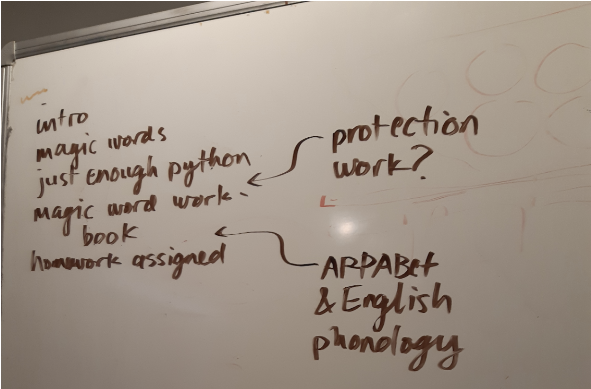
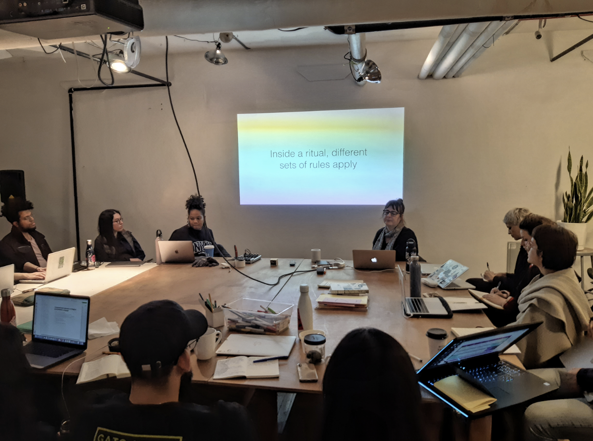
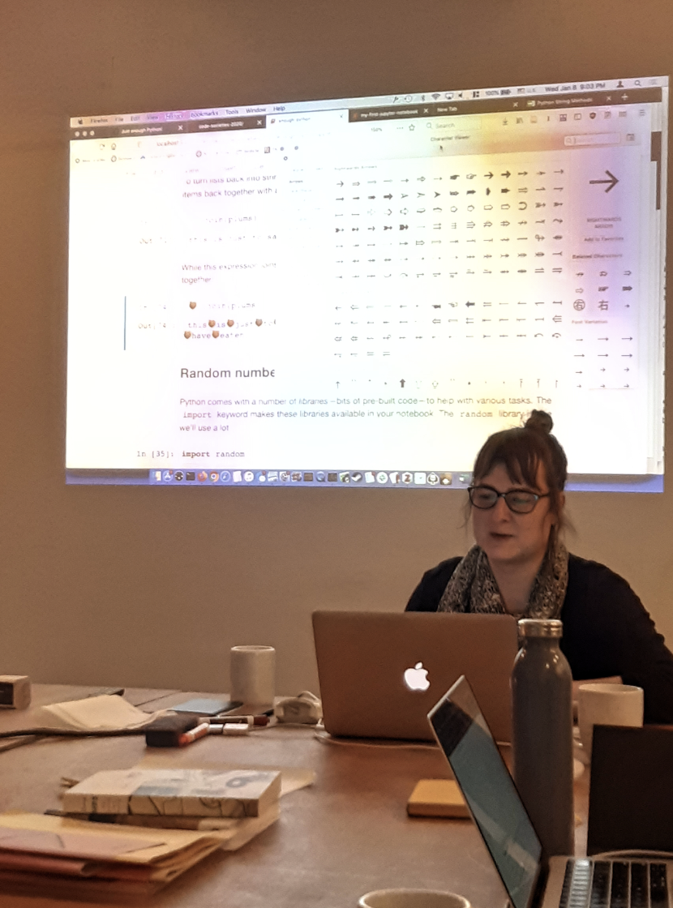

For Day 3 of Code Societies, Allison Parish’s Computational Exploration of Magical and Divinatory Language, or simply Comexmadivla, pushed notions of what magic words are and how they’re created. The class title itself called for a combination of a pause, a hmm and a, “huh?” when read or said out loud. When we think of magic, we understand something can not be explained, only experienced. How then can we experience a word? Is saying the word or words repeatedly the same as reading it over, and over again? Is one experience more impactful than the other? Or is writing the word what really gives the experience of magic?
First, we learned what inspires, tickles and fascinates Allison. Her projects @everyword, Rewordable, Using Electricity and NaNoGenMo all share a sort of ocular playfulness and engagement despite Allison saying visual design isn’t her strong suit. Her curiosity of magical and divinatory language came from her own spiritual seeking after being raised Mormon and later on leaving the church. Thus, European, medieval and renaissance words were our muses for the class.
So what then is a magic word? Allison puts it simply, “a ritualized stretch of language designed to bring about a certain outcome.” Magic words live on pages, but that does not necessarily mean they are to be used in a ritual or spell. An example of that are idioms or greetings (like goodbye: what is this even?!). Magic words aren’t easily translated. In fact, they may be illegible, adding to their power. How it looks on the surface is how it communicates. Yet a magic spell occurs when we use magic words and give it an action. This “activation” of language can produce a different effect, such as making words or things apotropaic. The word apotropaic means to ward or avert evil. We see this with horseshoes experienced as good luck charms, judaic Mezuzahs, and even “No copyright infringement intended” under YouTube videos.
To better understand magic words, we expanded our understanding of rituals. A performance or special event of sorts, rituals are opportunities to see or command an action and to define behaviors as different from others. Rites of passages like baptism, graduation ceremonies, holiday dinners and gift-giving, for example, are all rituals. Sometimes, moments are called “rituals” by people who do not understand them, which then invalidates those performing said ritual (like when people racistly use “voodoo” to explain something unknown to them). Because a different set of rules apply when ritualization happens, we see ideas come to fruition. There is also space for reflection and reasoning with rituals. I love that this can also happen when we consider language to include how it is spoken (so syntax, phonology, etc.), and not just how it may appear on paper. The shape of characters also produce a mystical effects depending on the richness of the type in my opinion. When we “put pen to paper,” that is naming what doesn’t have a name, we are exploring unknowns and including them versus excluding. In many ways, this serves as an ethical and methodical way of engaging magic words and language.
And then Allison tied the two: computation and magic! There are many examples of computation as an exploration tool dating back in history. This was particularly fascinating to conceptualize since many of us come from outside the field of programming and it is always helpful to see the many ways in which computation takes form. We learned of the Ars Magna by Ramon Llull published in the early 14th century, The Five-Fold Thought-ring of the German Language (1651) and Tristan Tzara’s 1920 “To make a Dadaist poem.” All of these used generative processes to create new meanings. This makes me think about how in one way or another, the lines between philosopher, linguist, artist, scientist and artist are often blurred. Are we all then simply attempting to make new meanings out of things and illustrate them for diverse audiences?
Similarly, because computation calls for surprises, programming is an almost-perfect medium to create magic words. We launched Jupyter Notebook on our operating systems and began to get comfortable using Python. The focus became familiarity with the programming language and how Jupyter Notebook works in general. Allison walked us through her favorite shortcuts and how they make it easier to move through the notebook. We then began doing simple string manipulation with prewritten code. To further the magic, we were assigned with creating 10 of our own oracle decks (both the name and interpretation). We will continue the exploration of magic words and Jupyter Notebook and Python next week for Part 2.
written by elizabeth pérez